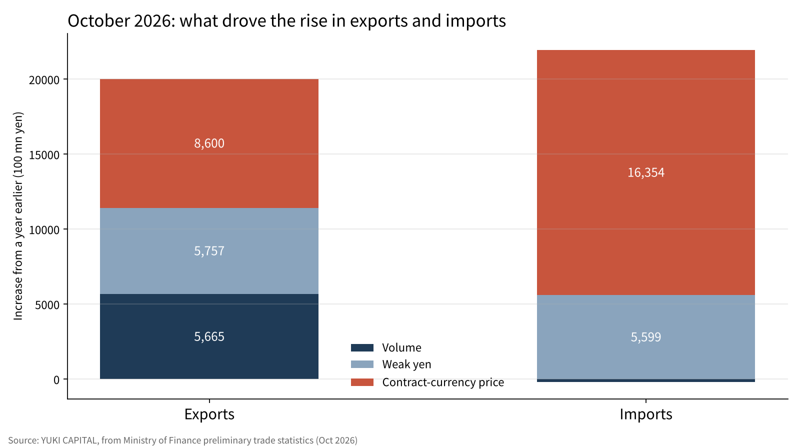
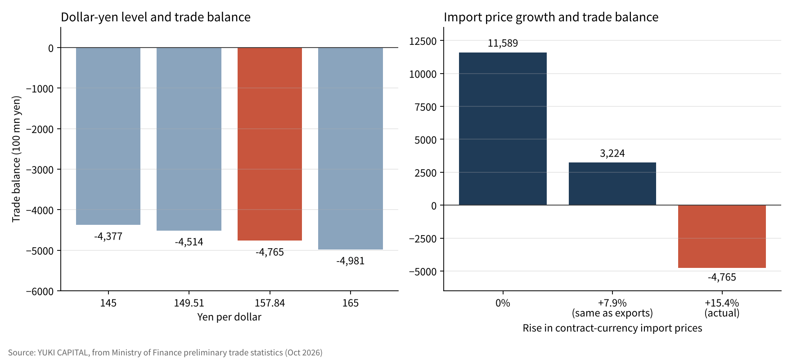

Why is Japan's trade in deficit when exports hit a record? Splitting the Ministry of Finance's October 2026 trade data into volume, the yen and prices
In the preliminary October 2026 trade statistics released by Japan's Ministry of Finance on November 18, exports were 11.77 trillion yen (up 20.5% year on year) and imports 12.25 trillion yen (up 21.6%), both the largest since comparable records began in 1979.
Even so, the balance was a deficit of 476.5 billion yen, wider than the roughly 300 billion yen deficit a year earlier.
The question of this article is how much of the export growth came from selling more, how much from the weak yen inflating the yen amount, and how much from higher prices, and why the deficit widened even as exports hit a record.

- Of the 2.0022 trillion yen rise in exports, higher volume accounted for only about 566.5 billion yen (28%); the weak yen added about 575.7 billion yen and higher contract-currency prices about 860.0 billion yen.
- Import volume was almost flat (-0.2%), yet higher contract-currency prices alone added about 1.6354 trillion yen, the main cause of the wider deficit.
- Because the weak yen inflates exports and imports at the same rate, moving the dollar from 145 to 165 yen keeps the deficit within 437.7 billion to 498.1 billion yen. What sets the size of the deficit is the price of imports, not the exchange rate.
The question and background
The trade balance is the value of goods exports minus goods imports. It excludes services and investment income. The export volume index measures the quantity of exports at base-year prices, so it shows how much was sold once price changes are removed [1].
The October headline looks strong. Exports of semiconductors and other electronic components and of chipmaking equipment both rose 49.7% year on year, cars rose 19.9%, and exports to the United States rose 23.9% [2]. Imports also jumped, with crude oil up 60.5% and electronic components up 60.0% [2].
Contract-currency price means the price measured in the currency used in the deal, usually the dollar. The yen price equals the contract-currency price multiplied by the change in the exchange rate. This distinction is at the core of the split in this article.
A record in exports alongside a wider deficit runs against intuition. To resolve it, the growth in value has to be split into three parts: volume, the exchange rate and price.
Data and method
I use four figures from the Ministry of Finance's preliminary trade statistics [1][2]: export and import values and their year-on-year changes, the export volume index (114.4, up 5.8%) and import volume index (106.4, down 0.2%), and the exchange rate used in the tally (157.84 yen per dollar, versus 149.51 yen a year earlier) [2].
The method is as follows. Growth in value is split into (1 + volume growth) x (1 + growth in yen-denominated price). Yen-denominated price growth is split again into (1 + yen depreciation) x (1 + growth in contract-currency price). Yen depreciation is 157.84 / 149.51 - 1 = 5.57%.
From this, export prices rose an estimated 13.9% in yen and 7.9% in contract currency. Import prices rose 21.8% in yen and 15.4% in contract currency. Last year's values are backed out from this year's values and growth rates, and the increase is allocated to the three factors.
For exports, for example, I took about 566.5 billion yen, last year's roughly 9.7666 trillion yen multiplied by volume growth of 5.8%, as the volume contribution. Next, I took about 575.7 billion yen, the post-volume amount multiplied by yen depreciation of 5.57%, as the yen contribution, and the remaining roughly 860.0 billion yen as the contract-currency price contribution. Changing the order of multiplication shifts the split slightly but does not change the conclusion.
Results
Exports rose by 2.0022 trillion yen from about 9.7666 trillion yen a year earlier. The breakdown is in the table below.
| A year earlier | Oct 2026 | Increase | Volume | Weak yen | Contract-currency price | |
|---|---|---|---|---|---|---|
| Exports | 9.7666 tn yen | 11.7688 tn yen | 2.0022 tn yen | 566.5 bn yen | 575.7 bn yen | 860.0 bn yen |
| Imports | 10.0701 tn yen | 12.2453 tn yen | 2.1752 tn yen | -20.1 bn yen | 559.9 bn yen | 1.6354 tn yen |

Only about 30% of export growth came from selling more. The other 70% came from the weak yen and higher prices inflating the yen amount. Import volume fell, yet import value rose by more than 2 trillion yen, and three quarters of that came from higher contract-currency prices.
Putting exports and imports side by side, the volume contribution was +566.5 billion yen for exports and -20.1 billion yen for imports, so on volume alone the trade balance would have improved by about 586.6 billion yen. The yen contribution, +575.7 billion yen for exports and +559.9 billion yen for imports, almost cancelled out. What worsened the balance was that the 1.6354 trillion yen rise in import prices exceeded the 860.0 billion yen rise in export prices by about 775.4 billion yen.
By region, the location of the deficit is clear. With the United States, exports of 2.1739 trillion yen and imports of 1.4834 trillion yen left a surplus of about 690.5 billion yen, and Asia as a whole showed a surplus of about 188.3 billion yen [2]. With China, exports of 1.9373 trillion yen and imports of 2.8426 trillion yen left a deficit of about 905.3 billion yen, and there was also a deficit of about 113.6 billion yen with the EU [2].
| Region | Exports | Imports | Balance |
|---|---|---|---|
| United States | 2.1739 tn yen | 1.4834 tn yen | +690.5 bn yen |
| Asia | 6.4105 tn yen | 6.2222 tn yen | +188.3 bn yen |
| China | 1.9373 tn yen | 2.8426 tn yen | -905.3 bn yen |
| EU | 1.1078 tn yen | 1.2214 tn yen | -113.6 bn yen |
Exports to China rose 13.3% overall, but car exports fell 53.3% to less than half [2]. Chipmaking equipment, by contrast, rose 42.6%, so trade with China took the shape of fewer finished goods and more tools for making things [2].
On a seasonally adjusted basis, October's balance was a deficit of 767.2 billion yen, larger than the unadjusted 476.5 billion yen [2]. Exports rose 3.3% from the previous month and imports 3.5%, so imports also had more momentum [2].
By product, the import price rise was led by crude oil (up 60.5%), electronic components (up 60.0%) and computers (up 52.7%) [2]. Crude oil is bought in dollars, so higher dollar oil prices feed straight into the import bill.
Sensitivity analysis
I tested how much the conclusion depends on the assumptions along two axes. The first is the exchange rate. Holding October's export and import volumes and contract-currency prices fixed, I moved only the dollar-yen rate to 145, 149.51, 157.84 and 165 yen.

The deficit came to 437.7 billion yen at 145 yen, 451.4 billion yen at 149.51 yen and 498.1 billion yen at 165 yen. A weaker yen inflates exports and imports at the same rate, so the size of the deficit barely changes.
The second axis is import prices. Holding the exchange rate and volumes at October levels, I set the rise in contract-currency import prices to 0%, 7.9% (the same as exports) and 15.4% (the actual figure). At 0% the balance would be a surplus of 1.1589 trillion yen, at 7.9% a surplus of 322.4 billion yen, and only at the actual 15.4% does it become a deficit of 476.5 billion yen. The deficit is driven by import prices, not the exchange rate.
The break-even point can also be found. Holding the exchange rate and volumes at October levels, the balance is roughly zero if the rise in contract-currency import prices shrinks from 15.4% to about 10.9%.
Discussion
There is an opposing view. If the weak yen persists, Japanese exporters can sell without cutting prices and their volumes should grow. Export volume did rise 5.8%, so the weak yen may well have lifted volume [2].
But this single month's volume growth was heavily shaped by specific items, such as a 37.2% rise in car exports to the United States [2]. Car exports to China fell 53.3%, so volumes moved in opposite directions by region [2]. One month of data cannot settle the effect of the weak yen.
This analysis has three limits. First, these are preliminary figures that will change in the final release. Second, the split uses aggregate indices rather than summing price changes product by product. Third, backing out last year's deficit from growth rates gives about 303.5 billion yen, slightly different from the published figure of about 301.9 billion yen.
Another view holds that the deficit is only about goods, and that Japan as a whole is earning more. Japan earns large income from its overseas investments and has long run a current account surplus [4]. Reading the trade deficit as a sign that Japan is getting poorer would be premature.
The yardstick for checking the result is whether the Bank of Japan's contract-currency export and import price indices come close to my estimates (exports up 7.9%, imports up 15.4%) [3]. If they are far off, the conclusion of the split needs revisiting.
Conclusion
Japan's exports hit a record in October 2026 less because more was sold than because the weak yen and higher prices inflated the amount. Import volume was flat, but higher dollar prices drove import value sharply higher.
The size of the deficit was set by import prices, not the level of the yen. Moving the dollar by 20 yen shifts the deficit by only about 60 billion yen, while holding import price rises to the pace of exports would turn the balance back to surplus.
When reading trade data, strength or weakness should not be judged by year-on-year value alone; the volume index and the exchange rate need to be read alongside it. In a month when volume accounts for only 30% of value growth, exports are less strong than expensive.
How I see it
I live in Japan, and I feel the weak yen has little effect on me as someone who holds foreign stocks, and it barely touches the costs of my businesses. So I do not change my allocation based on the yen, and I do not convert the dollars I hold back into yen.
This split confirmed that what drives Japan's trade deficit is import prices more than the exchange rate. Besides the US-Japan interest rate gap and the dollar-yen rate, I watch the direction of dollar prices such as oil.
Amounts are in yen because they come straight from Japan's official statistics. At 159.33 yen per dollar, the 476.5 billion yen deficit is about $2.99 billion.
References
- 財務省「貿易統計 用語の解説・指数の作成方法」 https://www.customs.go.jp/toukei/info/index.htm
- 財務省「令和8年10月分貿易統計（速報）の概要」2026年11月18日（数字は london3「2026年10月の貿易統計」の転記で確認） https://london3.jp/2026/11/202610boueki/
- 日本銀行「企業物価指数（輸出・輸入物価指数）」 https://www.boj.or.jp/statistics/pi/cgpi_release/index.htm
- 財務省「国際収支状況」 https://www.mof.go.jp/policy/international_policy/reference/balance_of_payments/
- 財務省・税関「外国為替相場（税関長公示レート）」 https://www.customs.go.jp/tetsuzuki/kawase/index.htm
- ロイター（Yahoo!ニュース）「貿易収支、10月は4,765億円の赤字 市場予想下回る赤字幅」2026年11月18日 https://news.yahoo.co.jp/articles/bce70a665771f50437cb9a6c9cc83d43eb506e48
Charts and illustrations by YUKI CAPITAL
I record my daily numbers and decisions on X.